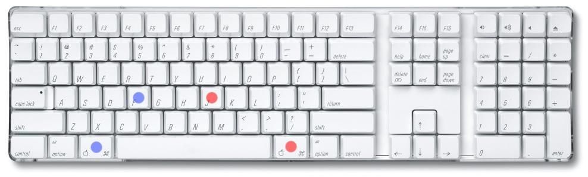

Web |
Xah Lee, 2008-05-29, 2010-05-21, 2010-08-28
I have used emacs daily since 1998, on average perhaps 5 hours a day. I also program emacs lisp since 2005. On average, perhaps 10 hours per week, and have created some major modes BBCode, AutoHotkey, LSL, Math Symbols Input, Unicode Browser, and a Emacs distribution ErgoEmacs. Here are 7 general emacs tips i felt that's the most important in emacs productivity.
In emacs, every keystroke is bound to a command (practically speaking). For example, when you type a key “e”, emacs actually runs the command self-insert-command. Any key or key combination or key sequence you press is bound to a command. There are about 3000 commands in emacs out of the box (not counting proper elisp functions). Most commonly used commands have a keyboard shortcut. For example, moving the cursor, opening file, copy paste, close a file, search text. To execute a command by name, type 【Alt+x】
The following will let you execute any command, or cancel it.
| Command Name | Shortcut | Purpose |
|---|---|---|
| execute-extended-command | 【Alt+x】 | Execute a command by name |
| keyboard-quit | 【Ctrl+g】 | Cancel any key sequence or command in progress |
The following will let you find out any command's name of a given shortcut, or a shortcut of a given command name.
| Command Name | Shortcut | Purpose |
|---|---|---|
| describe-key | 【Ctrl+h k】 | Find out what command is assigned a given shortcut (or menu) |
| describe-function | 【Ctrl+h f】 | Find out what shortcut(s) is assigned to a given function (and what the function do) |
The following will let you find out any commands or shortcuts a mode provides, and any command that you forgot the name.
| Command Name | Shortcut | Purpose |
|---|---|---|
| describe-mode | 【Ctrl+h m】 | Read the inline doc of the current mode. For example, find out what commands it provides. |
| apropos-command | 【Ctrl+h a】 | List all commands who's name contains a given string. |
Any operation in emacs is ultimately a command, and most frequently used ones have a keyboard shortcut. By mastering the above 6 commands, you will be able to find out any commands or shortcuts, in about any use of emacs.
Use “split-window-vertically” extensively, and give it a easy shortcut. For me, i use:
I chose “s” because i'm using Dvorak Keyboard Layout. Dvorak's “o” is on qwerty's “s”, and is right in the home row. For 3 and 4, because they are easiest number keys, together with 8 and 9. But 8 and 9 i already used.
;;; WINDOW SPLITING (global-set-key (kbd "M-4") 'split-window-vertically) ; was digit-argument (global-set-key (kbd "M-3") 'delete-other-windows) ; was digit-argument (global-set-key (kbd "M-s") 'other-window) ; was center-line
In emacs, the window is split into panes frequently. It may be split by a shell-command's output, by various text matching commands (e.g. list-matching-lines, grep-find, grep, rgrep), by emacs's various diff commands (diff, ediff, diff-backup, …), by viewing man page 【Alt+x manual-entry】, by list-buffers, by viewing inline doc (e.g. describe-function), by calc or calendar, or by lisp error messages. In emacs-generated panes, usually you can type “q” to close the pane if your cursor is there, but not always. And, some of the split panes put your cursor in the pane, but not all.
By mastering the above 3 generic window splitting commands, with easy-to-press shortcuts, you'll save a lot time opening or closing split panes. Also, by having a easy shortcut, now you can split and unsplit panes whenever you want and frequently. For example, i constantly have one pane showing dired and another pane for a different dir, or file content, or shell. A top/bottom split window is extremely useful when coding. (for example, when i need to edit part of a file based on the current location, i often do a split pane first, then use isearch-forward 【Ctrl+s】 to the location and edit, while viewing the original position in the other pane.)
Note: the default shortcut to split pane is 【Ctrl+x 2】. Expanding the current pane is 【Ctrl+x 1】. Switch cursor to the other pane is 【Ctrl+x o】. Splitting side by side is: 【Ctrl+x 3】.
In coding, almost every hour you need to look at different files or directories, or do copying, deleting, renaming files or directories. Emacs provides a file management mode, called “dired”. (“dired” is acronym for DIRectory EDit. “Directory Editing” is 1980's term for file management.)
Dired is very useful. Once you master it, you will almost never use a graphical desktop nor command line OS shell. The only time i need to switch to OS's graphical desktop is when dealing with special files such as video, sound, images, etc. Emacs dired together with emacs's other commands is also more convenient than unix command line utilities such as ls, cp, mv, mkdir, rmdir, chmod, chown, cat, less, touch, grep, find/xargs, etc. Doing sys admin on Solaris for 4 years, i almost always do these operations using dired or emacs's equivalent. Also, emacs uses the same interface of dired for ftp/sftp. So, for example, you can copy, move, delete, change file owner/perm, or edit files on remote servers (may it be Windows, OS X, or Linux), using the same dired interface and commands.
To activate dired, just use the same shortcut to open a file 【Ctrl+x Ctrl+f】, then give a directory path. Once in dired, you can look at the new menu “Operate”, “Mark”, “Regexp”, “Immediate”, “Subdir” to see what you can do. For a tutorial about dired, see File Management with Emacs (dired tutorial).
Also, in combination of dired, you should master the command “shell-command” 【Alt+!】 and “shell”. They compliment dired very well. (See: Emacs Shell Tutorial (bash, cmd.exe, PowerShell)).
In emacs, every file is represented in a “buffer”. The term “buffer” means a temp area of storage in computer science. From a application user's perspective, it might be better to think of it as “tabbed window” or “workspace”, as these terms are used web browsers or IDEs. It basically means a single window is used to represent several different files or work area, but only one is shown. Emacs's “buffers” feature can be thought of as tabbed window, it's just that it doesn't actually have the tab widgets as visual clue.
A typical emacs user will have tens of buffers in a session. Master how to manipulate buffers will benefit you greatly.
Here's the classic commands related to buffers:
| Command | Shortcut | Purpose |
|---|---|---|
| next-buffer | 【Ctrl+x Ctrl+→】 | switch to next buffer |
| previous-buffer | 【Ctrl+x Ctrl+←】 | switch to previous buffer |
| list-buffers | 【Ctrl+x Ctrl+b】 | show all buffers |
| switch-to-buffer | 【Ctrl+x b】 | switch to a specific buffer |
In emacs 22 (released in 2007), there's a new mode called ibuffer. (start it by 【Alt+x ibuffer】) “ibuffers” is a major improvement of the classic “Buffer menu” mode, while practically 100% compatible. It includes color-differentiated buffer listing, and few more powerful regex commands that manipulate buffers in batch. I've been using ibuffers since about 2006, and found it completely replace the “Buffer Menu” mode used by list-buffers.
You can do operation in batch to the marked ones, such as save all unsaved files, close all files of a given dir, close all Java files, etc. The concept and keys are very similar to dired. Look at the graphical menu 〖View〗 and 〖Mark〗 for list of commands.
Here's the ibuffer commands i use frequently:
| Shortcut | Purpose |
|---|---|
| m | Mark |
| u | Unmark |
| *u | Mark unsaved |
| S | Save marked buffer |
| D | Close marked buffers |
In ibuffer, the key sequence 【* u S D】 will save all unsaved files and close them. This is particularly useful after you've done a find ＆ replace on hundreds of files with “dired-do-query-replace-regexp”. (See: Interactively Find ＆ Replace String Patterns on Multiple Files.)
Because ibuffer completely replaces the functionality of list-buffers command, you can alias the command name list-buffers to ibuffer. Like this:
(defalias 'list-buffers 'ibuffer)
Emacs often generates a lot internal buffers that users are not interested in cycling thru. For example: *scratch*, *Messages*, *shell*, *Shell Command Output*, *Occur*, *Completions*, *Apropos*, *info*, etc. You might define your own next-user-buffer that skips emacs's buffers, and you might define next-emacs-buffer that cycles thru just the emacs's buffers. You can find the elisp code at code.google.com ergoemacs, look for the functions next-user-buffer and previous-user-buffer. (if you are already using ErgoEmacs Keybindings, the functions are already there. The shortcuts are 【Ctrl+PageUp】 and 【Ctrl+PageDown】.)
Also, the default shortcut for next-buffer 【Ctrl+x Ctrl+→】 has too many keystrokes, you can define a single-hotkey for it. Here's a example code:
;; sample easy shortcuts (global-set-key (kbd "<f5>") 'find-file) ; Open file or dir (global-set-key (kbd "<f6>") 'ibuffer) ; list buffers (global-set-key (kbd "<f7>") 'previous-user-buffer) (global-set-key (kbd "<f8>") 'next-user-buffer) (global-set-key (kbd "S-<f7>") 'previous-emacs-buffer) ; Shift+f7 (global-set-key (kbd "S-<f8>") 'next-emacs-buffer) ; Shift+f8 (global-set-key (kbd "<f9>") 'kill-this-buffer) ; Close file
See: Emacs: How to Define Keyboard Shortcuts.
The cursor moving commands are statistically the most frequently used shortcuts. You use them every few seconds.
Emacs's default cursor moving shortcuts are 【Ctrl+f】, 【Ctrl+b】, 【Ctrl+n】, 【Ctrl+p】. The keys {f, b, n, p} are scattered around the keyboard and are not under the home row. Also, Control key is typed by the weak pinky finger. The Meta key (the Alt under thumb) is much easier to type. So, remap keys so that Alt with a home-row key moves the cursor.
;; make cursor movement keys under right hand's home-row. (global-set-key (kbd "M-j") 'backward-char) ; was indent-new-comment-line (global-set-key (kbd "M-l") 'forward-char) ; was downcase-word (global-set-key (kbd "M-i") 'previous-line) ; was tab-to-tab-stop (global-set-key (kbd "M-k") 'next-line) ; was kill-sentence (global-set-key (kbd "M-SPC") 'set-mark-command) ; was just-one-space (global-set-key (kbd "M-a") execute-extended-command) ; was backward-sentence
For more extensive remapping, see: ErgoEmacs Keybinding.
Searching text and find ＆ replace text is tremendously useful. I use it many times every hour. The following are the most useful search or find-replace commands:
| Command Name | Shortcut | Target | Description |
|---|---|---|---|
| isearch-forward | 【Ctrl+s】 | cursor point to end (cycles back to file beginning) | interactive search |
| query-replace | 【Alt+%】 | region, or cursor point to end | interactive find ＆ replace |
| query-replace-regexp | 【Ctrl+Alt+%】 | region, or cusor point to end | interactive find ＆ replace with regex pattern |
| dired-do-query-replace-regexp | In dired, Q | multiple files | interactive find ＆ replace with regex pattern on multiple files |
For detail about using these commands, in particular, how to control whether the search is case-sensitive, or whether the replacement is case-sensitive, see: Find ＆ Replace with Emacs.
Many emacs find-replace commands uses a regex. Emacs has many other commands that uses regex. For example, list-matching-lines, delete-matching-lines, highlight-regexp, grep, find-dired, dired-do-query-replace-regexp, dired-do-rename-regexp, apropos-command. Mastering emacs regex will be a good investment. Also, you should know how to enter TAB or Return character when using emacs regex interactively. (“\t” or “\n” does not work.) For a short tutorial on most important tips of emacs's regex, see: Text Pattern Matching in Emacs.
You switch to different applications all day. Web browsers, emacs, terminal, Desktop, music player, image editor, … etc. Their usage and interface changes, but there is one thing that does not change: Your keyboard.
Your keyboard is a intimate item. You touch it every minute. Emacs in particular, use modifier keys extensively. This may sound silly, but a good keyboard is one of the most important thing in productivity with emacs.
A good keyboard for emacs, should be one with large Alt and Control keys, and they should be available on both sides (one set for each hand, just like Shift key), and the right side's set should be positioned symmetrically. The distance from F to left Alt, and distance from J to the right Alt, should be the same.
BAD
GOOD

Doesn't matter whether you like ergonomic keyboards, you should take a closer look at your keyboard, and see if it works with emacs well. Also, it's good to develop good habits when pressing the Control key. You should avoid pressing it with pinky, and should learn using alternate hand for Control-key combination, like you would with Shift key. For detail, see: How To Avoid The Emacs Pinky Problem.
PS This article is inspired by Stevey Yegge's blog article: Effective Emacs (2006) @ sites.google.com. I like to thank Steve for his article. There are a few of his tips i disagree strongly, see: Stevey Yegge's Effective Emacs.
Disqus
Glad you liked it. Would you like to share?
Sharing this page …
Thanks! Close
Add New Comment
Showing 4 comments